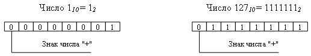
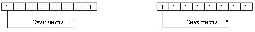
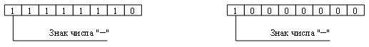
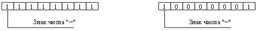

Для спрощення арифметичних операцій, числа в цифрових пристроях ЕОМ подаються спеціальними кодами - прямим,оберненим і додатковим.
Всі три способи використовують самий лівий (старший) розряд бітового набору довжини nдля кодування знака числа: знак "плюс" кодується нулем, а "мінус" - одиницею. Інші n-1розрядів (цифрова частина) використовуються для представлення абсолютної величини числа.
Додатні числа у прямому, оберненому та додатковому кодах записуються однаково - двійковим кодом числа з цифрою 0 у знаковому розряді. Наприклад, при розмірі розрядної сітки n= 8:
Від’ємні числа в прямому, зворотному і додатковому кодах мають різне представлення.
Прямий кодвід’ємного числа відрізняється від прямого коду додатного числа тим, що значення його знакового розряду дорівнює не 0, а 1. Наприклад, прямий код чисел -1 і -127 у 8-розрядній сітці:
Обернений кодвід’ємного числа отримується із прямого коду шляхом заміни його цифр на їх доповнення до1. Код знака зберігається без змін. Заміна цифр їх доповненням для двійкової системи співпадає з операцією інверсії, тобто у всіх розрядах нулі потрібно замінити на1, а одиниці - на 0. Наприклад, обернений код чисел-1і-127у8-розрядній сітці:
Додатковий код від’ємного числа отримується із оберненого коду збільшенням на1його молодшого розряду. При цьому перенос із знакового розряду ігнорується. Наприклад, додатковий код чисел-1і-127у8-розрядній сітці:
Ресурс